生成AIを、組織に定着させる
Google Gemini、Microsoft Copilot、Claude Codeなどの生成AIツールを、法人でどう導入し、どう定着させるか。費用と稟議、支援会社の選び方、研修設計、定着支援、エージェント化まで——導入の各段階を実務に根ざして解説するメディアです。
- 01パイロット選定
- 02セキュリティ確認
- 03利用ルール策定
- 04研修・オンボーディング
- 05全社展開
パイロットから全社展開まで、導入を段階で設計し、定着まで見届ける。図はイメージ。
すべて：17件
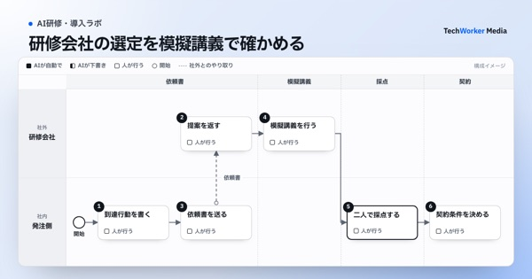
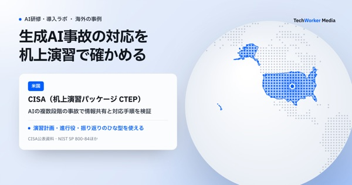
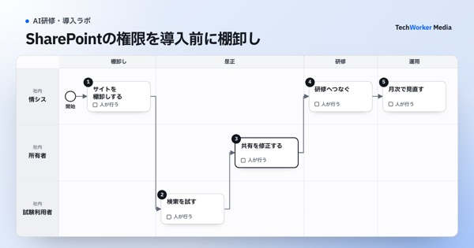
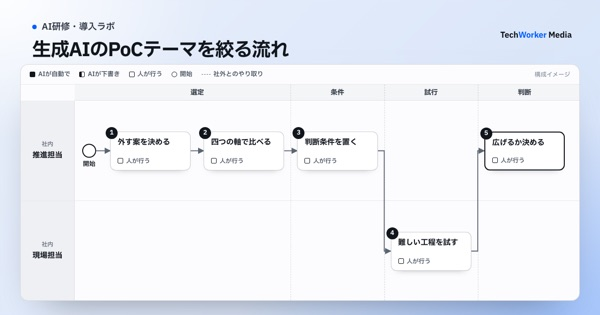
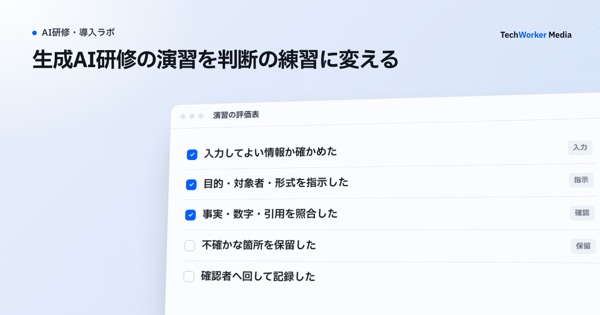
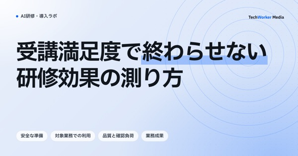
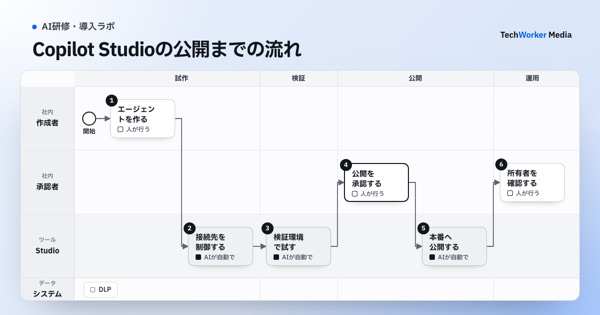
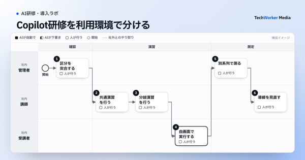
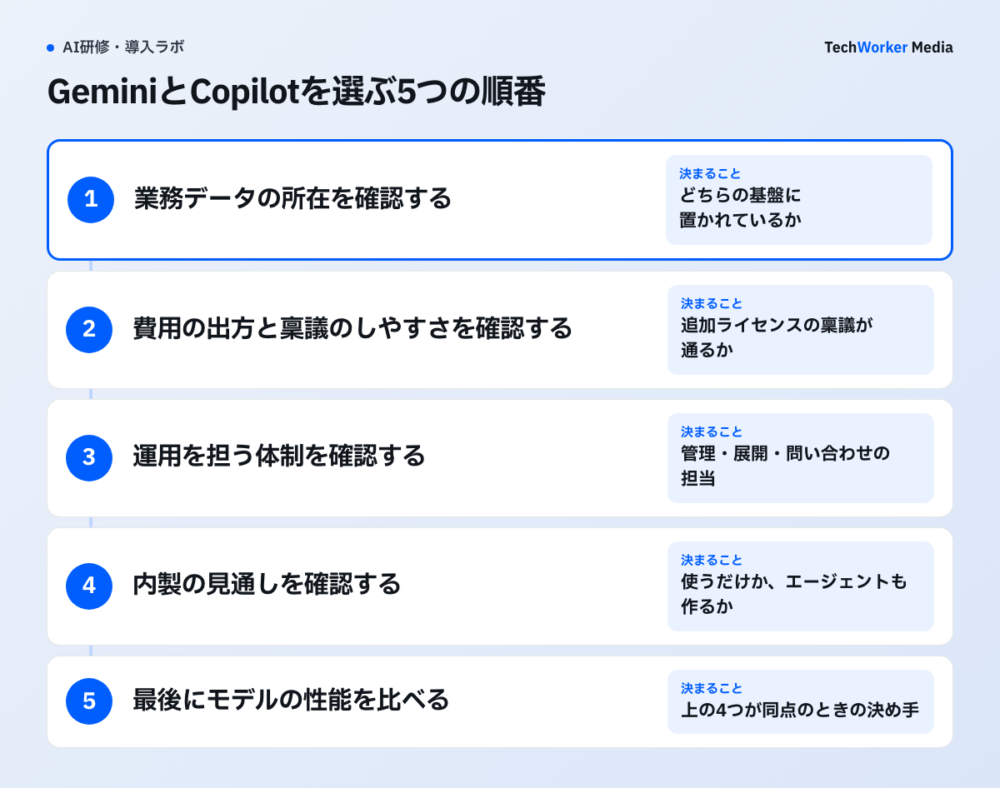

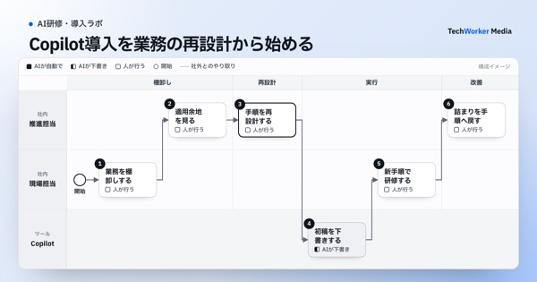

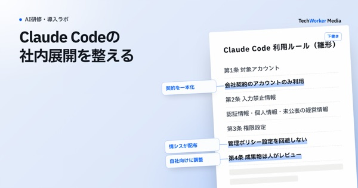
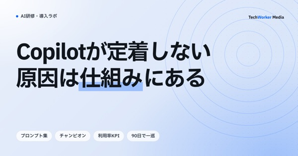
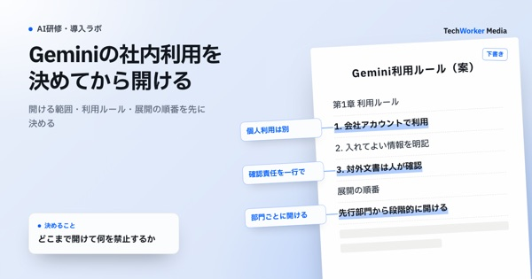
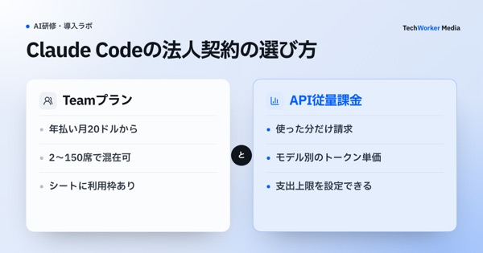
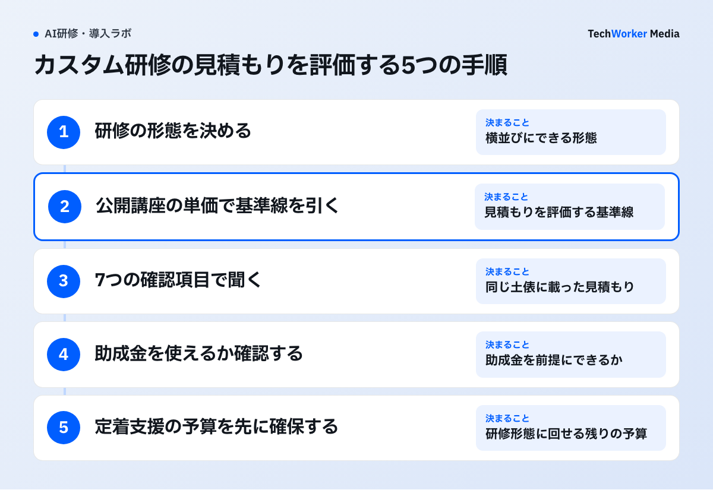
このメディアには、選んだ読者向けの記事がまだありません。
ほかのメディアを見る
「AI研修・導入ラボ」は、企業の生成AI導入・活用を支援する株式会社TechWorkerが運営するメディアです。Google Gemini、Microsoft Copilot、Claude Codeなどの生成AIツールの法人導入・研修・定着・社内展開を、上場企業を含む37社・2,500名の支援で得た知見をもとに発信しています。
研修のご相談は Microsoft Copilot対応の法人研修、Claude Code研修、Geminiを含む主要ツール横断の 生成AI法人研修 の各ページから、その他のご相談は 無料相談 から承っています。
本メディアおよび本研修は株式会社TechWorkerが独自に企画・提供するものであり、Google LLC、Microsoft Corporation および Anthropic PBC との提携・後援・承認を受けたものではありません。Google、Google Workspace、Gemini は Google LLC の商標です。Microsoft、Microsoft 365、Copilot、Copilot Studio は Microsoft グループ企業の商標です。Claude、Claude Code は Anthropic PBC の商標です。